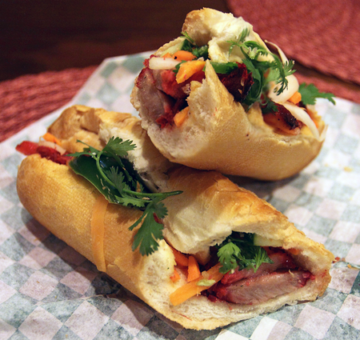

Home
Bahn Mi

Hungover walking the streets of the mountainous hippy town Katoomba NSW, my mate was frothing a "Vietnamese Sandwich".
While I love sandwiches, I couldn't fathom how exactly the vietnamese had reinvented it for themselves.
This was the glorious moment I discovered a new life long love, the Bahn Mi.
Please note though it isn't traditional, my opinion is Bahn Mi's taste 10x better con queso.
- Yields: 4 servings
- Prep time: 20 minutes (not considering time to marinate)
- Cook time: 15 minutes
Ingredients
- 1 French baguette
- 450g pork roast or chicken breast
- 1/4 cup soy sauce
- 2 tablespoons fish sauce
- 1 tablespoon honey
- 1 teaspoon garlic powder
- 1/2 teaspoon red pepper flakes
- 1 large cucumber, thinly sliced
- 1/2 cup pickled carrots and daikon radishes
- 1/4 cup chopped fresh cilantro
- 1/4 cup mayonnaise
- 1/4 cup sriracha (optional)
Preparation
- Prepare the bread: Preheat oven to 175°C. Slice baguette in half lengthwise.
- Marinate the protein: In a small bowl, combine soy sauce, fish sauce, honey, garlic powder, and red pepper flakes. Marinate protein in the mixture for at least 30 minutes, or up to 2 hours.
- Cook the protein: Grill or pan-fry marinated protein until cooked through.
- Assemble the sandwiches: Spread mayonnaise on one side of the baguette. Top with protein, cucumber, pickled vegetables, and cilantro. Drizzle with sriracha, if desired.
- Toast the bread: Cut the sandwich in half and toast in the oven for a few minutes, or until crispy.
Tips
- Pickling vegetables: If you don't have store-bought pickled carrots and daikon radishes, you can make your own. Combine shredded carrots and daikon radishes with rice vinegar, sugar, and salt. Let it sit in the refrigerator for at least 30 minutes.
- Bread options:While a French baguette is the classic choice for Bahn Mi, you can also use other types of bread, such as a hoagie roll or a ciabatta loaf.
- Con Queso:Cheese it up brudduh, I'd go with some tasty or even mozzarella, don't you dare use sliced cheese.